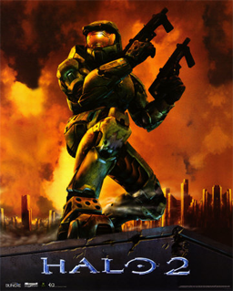

Why Halo 2 is Top Tier
It Just Is

Halo 2
,although many do not play it as much now a days is a nearly perfect game, and if you think otherwise then you are just wrong. In 2004, this was the first console game to release online functionality. The campaign is what makes the game nearly a masterpiece, due to the difficulty being very unfair on legendary. Other than that, Halo 2 is a perfect game. Even better, a remaster of the game came out in 2014 and it makes both campaign and multiplayer look visually better.
What Halo 2 Does Best
- Story Telling: Uses character development and environment to tell a story between 3 factions about military, religous, or species conflicts
- Online Multiplayer: The online aspect includes many game modes for an arena type of shooter, and you can invite friends to play the campaign with you
- Glitches: There are no "Bad" glitches in this game, the glitches that are present are to help the player, like jumping across out of bound areas to speedrun levels
- Connections: Being a sequal, you do not have to play Halo CE because with the story telling, Halo 2 explains the premise of Halo CE without being obvious, or too on the nose
- Moist Cr1TiKaL Challenge: Halo 2, although being out for nearly 18 years is still seeing community challenges and population. Moist has challenged the Halo community to beat the game on the hardest difficulty for 20,000 dollars
Unlike games today, Bungie put a lot of time and effort into making Halo 2, this is clearly seen with the first two details above. To further this claim, about 2 months after release, Bungie would come out with multiplayer dlc and because the game was doing so well, they decided to give the map packs out for free. This type of generosity is not seen today at all.